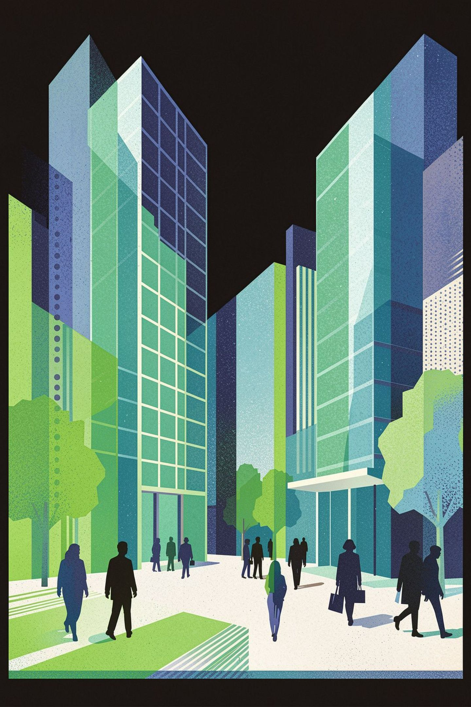
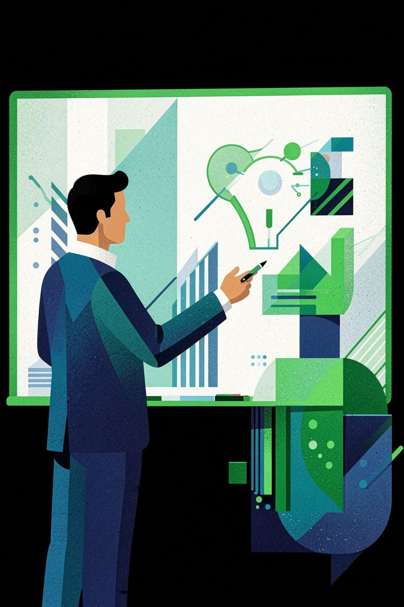
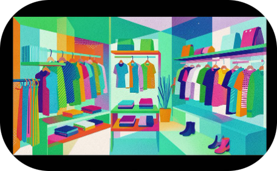
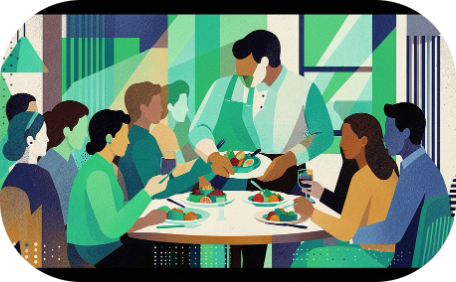
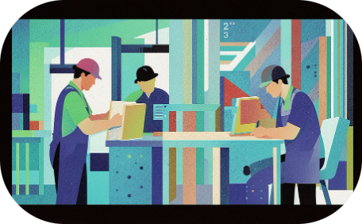
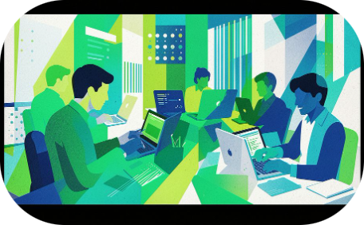
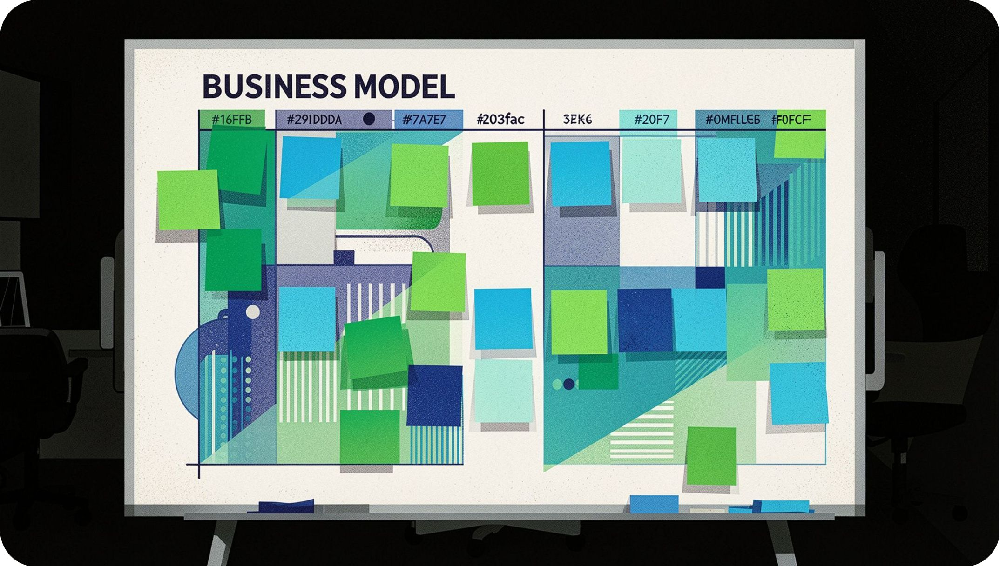
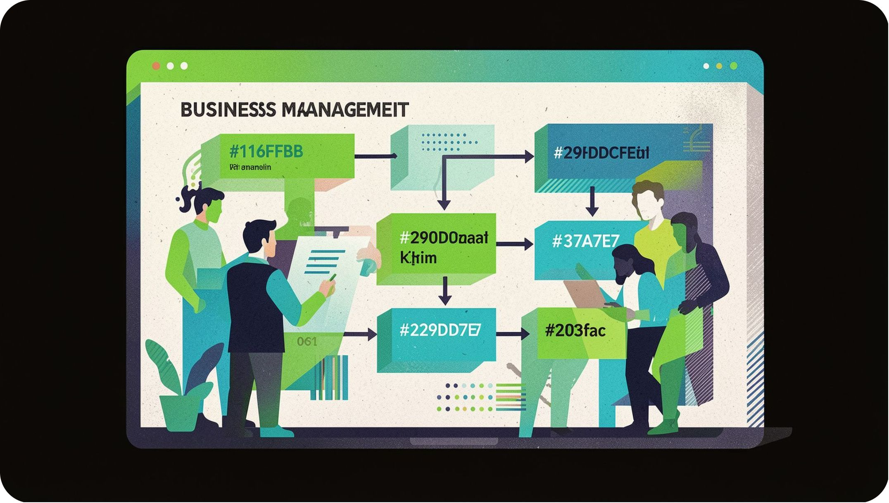
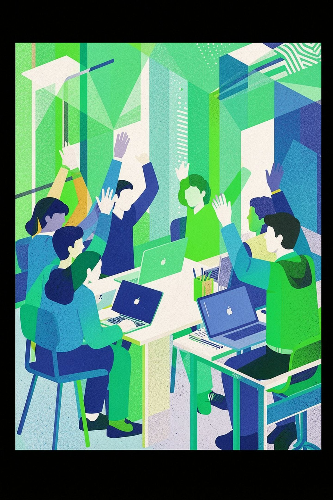

Talabalar uchun asosiy tushunchalar
Slaydlar orasida o'tish: ← → tugmalari · Umumiy ko'rinish: Esc


Qonuniy tijorat faoliyati orqali daromad olish
Biznes bilan shug'ullanuvchi, tashabbus ko'rsatuvchi shaxs
Xavf-xatarni qabul qilib, yangi g'oyalarni amalga oshirish
Biznes — faoliyat; tadbirkorlik — innovatsiya va tavakkalchilik bilan faoliyat
Do'konda tayyor mahsulotni sotish = biznes · Yangi mahsulot yaratib, bozorga chiqarish = tadbirkorlik

Mahsulotlarni sotish — kiyim do'koni, bozor

Odamlarga yordam berish — salon, restoran, taksi

Mahsulot tayyorlash — fabrika, mebel ustaxonasi

Dastur, veb-sayt, mobil ilova yaratish
Ehtiyoj yoki "og'riq"ni aniqlash
Yechim — mahsulot yoki xizmat
Mahsulotni sotib oluvchilar
Sotuv va biznes rivoji
Odamlar biror muammo yoki ehtiyojga ega bo'ladi
Muammoni hal qiluvchi mahsulot yoki xizmat tayyorlaysiz
Mijozlar sotib oladi va biznes rivojlanadi

Alexander Osterwalder va Yves Pigneur tomonidan ishlab chiqilgan (Business Model Generation, 2010) vizual asbob. U biznes modelini bir sahifada 9 ta blok orqali tasvirlaydi.
Biznesning barcha muhim qismlari bitta joyda
Hamkorlar va jamoa bilan samarali muloqot
Business Process Management (BPM) — biznes faoliyatini modellashtirish, avtomatlashtirish, nazorat qilish va takomillashtirish uchun qo'llaniladigan intizomli yondashuv.

Biror maqsadga erishish uchun ketma-ket bajariladigan ishlar
Har bir bosqichni diagramma ko'rinishida tasvirlovchi sxema
Ishlarni tezlashtirish, xatolarni kamaytirish, samaradorlikni oshirish
Mijoz onlayn formani to'ldiradi
Buyurtma tizimga yoziladi
To'lov holati tasdiqlanadi
Paketlash va jo'natishga tayyorlash
Har bir bosqich tartib bilan bajariladi
Bir bosqichda muammo bo'lsa, butun jarayon sekinlashadi
BPM orqali har bir bosqichni o'lchash va takomillashtirish mumkin
Biznes — tijorat faoliyati; tadbirkorlik — innovatsiya va tavakkalchilik
Biznes modelini 9 ta blokda tasvirlovchi vizual asbob
Jarayonlarni tahlil qilish, takomillashtirish va avtomatlashtirish
Canvas va BPM har qanday biznesda samaradorlikni oshiradi

O'zingizga tanish biznes (non do'koni, o'quv markazi, taksi xizmati)ni tanlab, 9 blokni to'ldiring.
Uchta misol keltiring va har biri nima uchun biznes yoki tadbirkorlik ekanini asoslang.
Kafeda buyurtma berishdan to'lovgacha bo'lgan jarayonni 5–7 bosqichda chizing.
3-topshiriqdagi xaritada eng ko'p vaqt oladigan bosqichni aniqlang va uni yaxshilash yo'lini taklif qiling.
To'liq keyslar va javoblar: TOPSHIRIQLAR.md